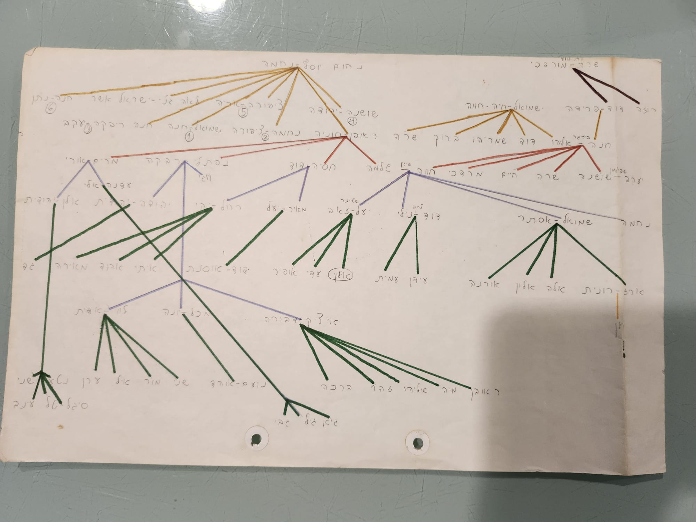
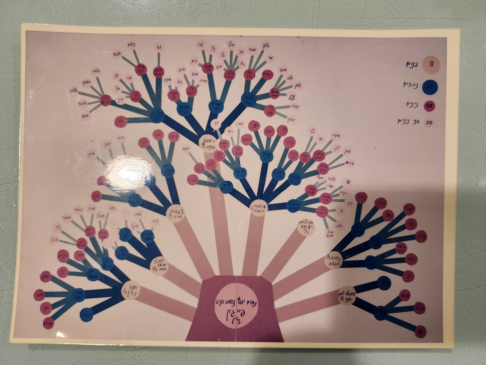
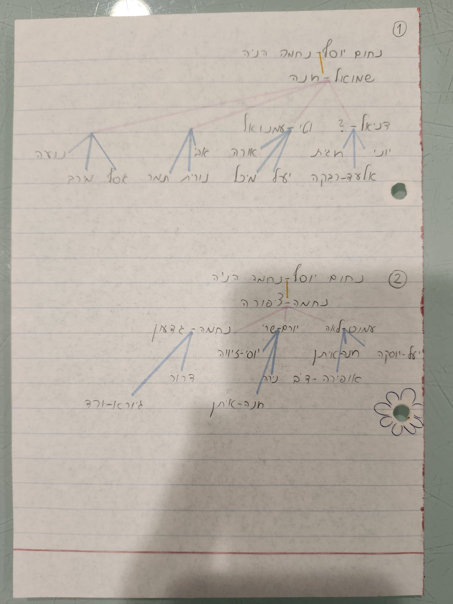
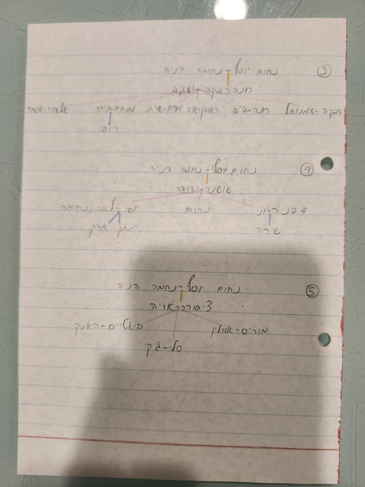
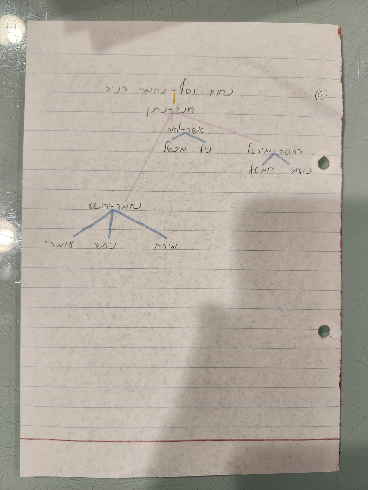

Family source collection
Original family
charts.
Browse the original photographs behind the interactive family tree. Select a chart to open its full-size image.
Return to the family treeSteiner family
The original pages
The panorama joins all four source photographs in numbered order.

The complete chart, together
All four full-size original scans, joined left to right in numbered order.


Separate source collection
Additional Feigin family charts
These Hebrew charts remain separate from the Feigin branch through Yael until their relationship is confirmed.
Hebrew is preserved in the original photographs. The poster uses first names only: יעל זאב refers to two people, Yael Feigin and Ze'ev Steiner, not one person. The poster is not integrated into the family-tree data. A handwritten page heading appears to read נחום יוסף – נחמה הניה — Nachum Yosef and Nechama Hania. Other names and relationships have not been transcribed reliably.

01Faint hand-drawn chart Text not reliably readable · Open ↗
02Poster · first names only יעל זאב means Yael and Ze'ev, two people · Open ↗
03Handwritten chart · נחום יוסף – נחמה הניה Appears to read Nachum Yosef & Nechama Hania · Open ↗
04Handwritten chart page Names not yet reliably transcribed · Open ↗
05Handwritten chart page Names not yet reliably transcribed · Open ↗